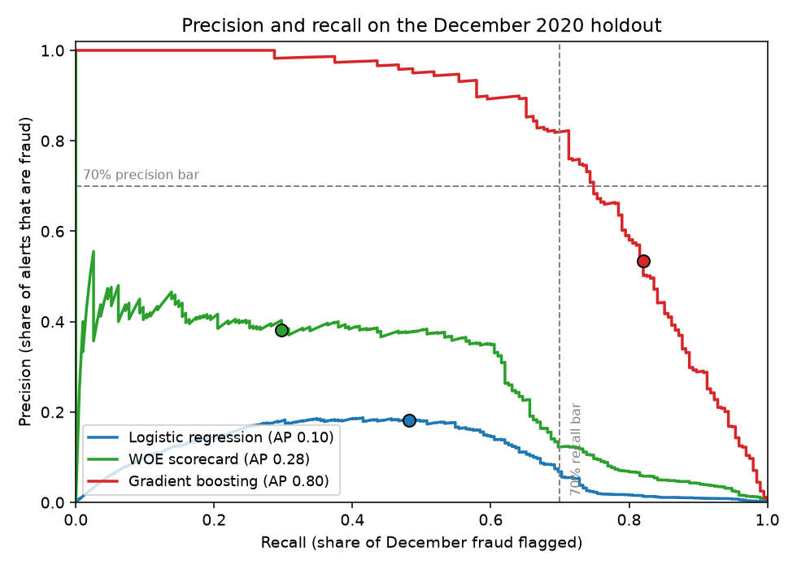
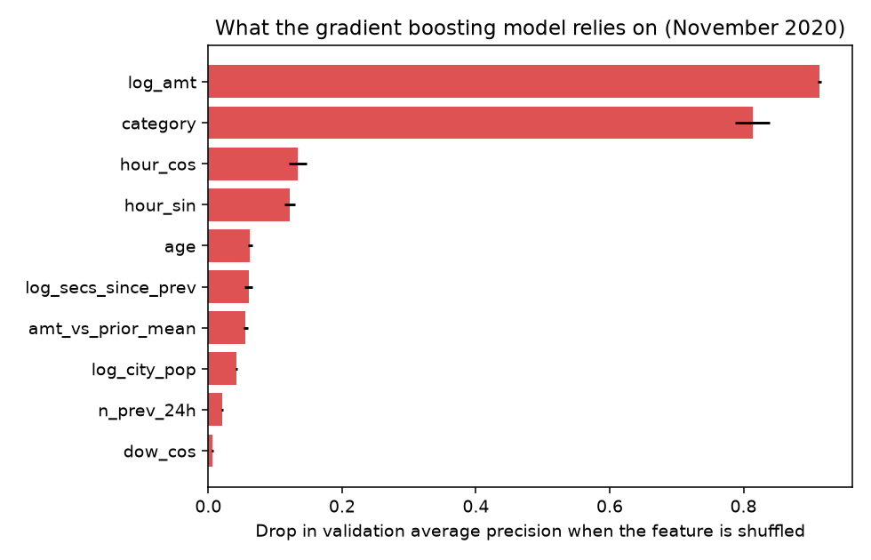

SecureBank fraud: first models on a time-split dataset
The SecureBank case in EN.705.603 at Johns Hopkins asks for a card-fraud model that reaches 70 percent precision and 70 percent recall on unseen months. I ran this as the model selection pass. I picked two offline metrics tied to the requirements, trained three models on the same chronological split, and read the comparison for where the signal lives.
The two metrics
I score every model on average precision over the whole ranking and on precision and recall at one operating point. Average precision is my model selection number, since it does not depend on a threshold I have not chosen yet. The operating point is the number I'd show the bank. The alert threshold is set on the validation month at the lowest score that keeps precision at 70 percent, which is the analyst capacity constraint from my earlier posts turned into a rule, and recall at that point is what the bank gets for it.
Dataset design
The split is the one I argued for in the dataset design week. I train on January 2019 through October 2020, choose the threshold on November, and score December once. I keep every fraud row in training and a 10 percent sample of legitimate rows with balanced class weights; validation and test stay at the natural fraud rate, because precision on a rebalanced set is a number the bank never sees.
| Partition | Rows | Fraud | Fraud rate |
|---|---|---|---|
| Train (Jan 2019 to Oct 2020) | 1,313,360 | 6,099 | 0.46% |
| Validation (Nov 2020) | 57,919 | 202 | 0.35% |
| Test (Dec 2020) | 111,593 | 195 | 0.17% |
December doubles the volume and keeps the fraud count flat, so the base rate halves. Every precision number I report below was harder to earn than the validation month suggested.
Features
I built seventeen features, all computable at authorization. log amount and amount against the card's own prior mean, counts of the card's transactions in the prior hour and prior day, log seconds since the previous transaction, hour and weekday and month as sine and cosine pairs plus a night flag, cardholder age, log city population, distance from home to merchant, and the merchant category. The velocity features use every transaction, including the 10 percent with no label, but only rows before the one being scored.
Three models, one comparison
I fit a logistic regression on the standardized features, a weight-of-evidence scorecard (optbinning bins each feature on the training rows, a logistic regression fits on the WOE columns, and I added one category-by-amount cross bin), and a gradient boosting classifier.

Gradient boosting reaches average precision 0.80 and, at the November threshold, 54 percent precision with 82 percent recall on 10 alerts a day, catching 93 percent of the fraud dollars. The scorecard reaches 0.28 and the raw logistic regression 0.10. I read the precision miss against the 70 percent target as the December base-rate halving, not the ranking, which is nearly unchanged from November.
Where the signal lives

The fraud in this data is a $300 to $1,200 purchase in a handful of categories, mostly between 22:00 and 04:00. Amount alone does not find it, because the same $500 is normal in travel and alarming in grocery. A main-effects scorecard cannot express that and scores 0.13 on average precision; one cross bin lifts it to 0.28; the tree model learns the interaction on its own and scores 0.80. That gap is what I took from the exercise.
Open the binning explorer to see the bins behind the scorecard and move the splits yourself.
Night and day
Gradient boosting holds 88 percent recall at night and 48 percent in the day. The scorecard raises no daytime alerts at all. A model that only works at night is a model a fraudster learns to beat by waiting until morning, so I'd report the daytime slice to the bank separately.
What I would test next
- Hold the threshold rule and re-fit monthly on a rolling window, to see whether the December precision drop is seasonal volume or drift in the fraud mix.
- Give the scorecard the hour-by-category and amount-by-hour cross bins and check whether an explainable model can close the gap to the tree.
- Replace the 70 percent precision rule with an alert budget per analyst per day and read recall off that, which is how fraud operations teams I have worked with set thresholds.
- Daytime fraud as its own evaluation slice, with its own threshold if the cost of a missed daytime case justifies more alerts.
Method notes: scikit-learn 1.9, optbinning 1.0, one run of 37 seconds on a laptop. Thresholds and bins come from the training and validation months only. Confidence intervals resample cardholders, 500 draws.